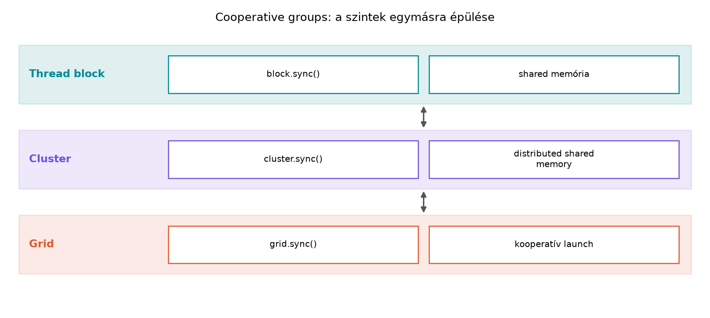

Az előző fejezetekben a párhuzamos végrehajtást a hardver fogalmaival
írtuk le: tömbök (grid), blokkok, szálak, warpok. Ez a modell rendkívül
hatékony, de megterhelő a programozó számára, amikor összetett
algoritmusokat kell megvalósítani. A __syncthreads() hívás
például látszólag egyszerű, de valójában csak a teljes blokkra
vonatkozik, és nem fejezi ki a kód olvasója számára, hogy a fejlesztő
pontosan milyen szálhalmazt akar szinkronizálni.
A CUDA 9-ben bevezetett Cooperative Groups (CG) egy programozási absztrakció, amely ezt a problémát oldja meg. A célja, hogy a szálak együttműködését explicit, típusos és újrafelhasználható módon lehessen kifejezni. A CG nem egy új hardveres képesség, hanem egy C++ sablonkönyvtár és programozási modell, amely a meglévő CUDA primitívekre épül. Lehetővé teszi, hogy a szálak egy csoportját egyetlen objektumként kezeljük, és ezen az objektumon szinkronizációs és kollektív műveleteket végezzünk.
Miért van erre szükség? Képzeljünk el egy olyan kernelt, ahol nem a
teljes blokkot, hanem egy 16 szálból álló alcsoportot kell
szinkronizálni. A hagyományos CUDA-ban ez csak warp-szintű
intrinsicekkel (__shfl_sync) vagy körülményes,
__syncthreads-szel kombinált megoldásokkal volt lehetséges,
amelyek hajlamosak a hibára. A CG ezt a struktúrát emeli be a
típusrendszerbe.
A Cooperative Groups központi eleme a thread_group
fogalma. Egy csoport olyan szálak halmaza, amelyek együttműködhetnek
egymással: szinkronizálhatnak, adatot cserélhetnek, vagy kollektív
műveleteket (pl. redukció) hajthatnak végre.
A thread_group egy absztrakt alaposztály, amelyből a
konkrét, hardver által támogatott csoporttípusok származnak. A csoportok
két fő kategóriába sorolhatók:
thread_block (a blokk, amelyben a szál fut) vagy a
grid_group.tiled_partition, amely egy blokkot kisebb, warp-méretű vagy
más méretű csempékre oszt fel.A csoportok legfontosabb tulajdonságai: - Méret
(size()): A csoportban lévő szálak száma. -
Rang (thread_rank()): Az aktuális szál
indexe a csoporton belül. - Érvényesség
(is_valid()): Megmondja, hogy az aktuális szál
része-e az adott csoportnak (ez különösen fontos a particionálásnál). -
Szinkronizáció (sync()): A csoport összes
szálának szinkronizálása.
Fontos megérteni a konvergencia fogalmát. Egy
csoport szinkronizálása csak akkor definiált, ha a csoport összes tagja
eléri a sync() hívást. Ha a csoport egy divergens ágban jön
létre, a viselkedés nem definiált, és a CUDA hibát jelezhet vagy
leállíthatja a kernelt.
A hagyományos __syncthreads() egyetlen műveletet ismer:
a teljes blokk szinkronizálását. A Cooperative Groups ezt kiterjeszti. A
cg::sync(group) függvény vagy a group.sync()
tagfüggvény az adott csoportra vonatkozó szinkronizációt hajt végre.
Például:
// Teljes blokk szinkronizálása
cooperative_groups::this_thread_block().sync();
// Egy 16 szálból álló csempe szinkronizálása
auto tile = cooperative_groups::tiled_partition<16>(cooperative_groups::this_thread_block());
tile.sync();A szinkronizáción túl a CG kollektív műveleteket is biztosít. Ezek olyan gyakori párhuzamos minták, amelyeket a gyártó rendkívül optimalizáltan implementált az adott hardverre. A legfontosabbak:
cg::reduce(group, value, op): Egy
érték redukálása (pl. összegzés, maximum) az egész csoportra. Ez a
függvény a warp-szintű shuffle-ökre és a blokk-szintű shared memory-ra
egyaránt optimalizálva van.cg::scan(group, value, op): Prefix
összeg (scan) kiszámítása.cg::any(group, pred) /
cg::all(group, pred): Logikai kiértékelés a
csoportra (van-e igaz, mind igaz-e).cg::broadcast(group, value, src_rank):
Érték szétosztása a csoport egy tagjából az összes többinek.Ezek a kollektívák azért fontosak, mert az absztrakció mögött a
hardvernek megfelelő legjobb implementáció fut. Egy
cg::reduce egy thread_block_tile esetén
hardveres shuffle-öket használ, míg egy thread_block esetén
shared memory-t és szinkronizációt is beiktat. A programozónak nem kell
ezeket a részleteket manuálisan kezelnie.
A gyakorlatban a leggyakrabban használt csoporttípusok a következők:
cooperative_groups::thread_block:
Ez a legalapvetőbb csoport. Minden szál pontosan ugyanazt a blokkot
reprezentáló objektumot kapja meg a cg::this_thread_block()
függvény hívásával. Ez a csoport felváltja a
__syncthreads() használatát egy típusosabb, kifejezőbb
formára.
#include <cooperative_groups.h>
namespace cg = cooperative_groups;
__global__ void kernel() {
cg::thread_block block = cg::this_thread_block();
// ...
block.sync();
}cooperative_groups::thread_block_tile:
Ez a csoport egy warp-méretű (jellemzően 32 szál) csempét reprezentál.
Létrehozásához a tiled_partition függvényt használjuk. A
thread_block_tile különösen hatékony, mert műveletei
gyakran hardveres szinkronizálást és shuffle-öket használnak, elkerülve
a lassabb shared memory-s köröket.
cuda cg::thread_block block = cg::this_thread_block(); cg::thread_block_tile<32> warp_tile = cg::tiled_partition<32>(block);
cooperative_groups::thread_block_tile<Szám>
(Nem warp-méretű csempe): Bár a hardver alapvetően warpokban
hajt végre, a CG lehetővé teszi tetszőleges méretű, 2 hatványának
megfelelő csempe létrehozását is (pl. 8, 16, 64, 128 szál). Ez hasznos
lehet, ha az algoritmus nem warp-méretű adatblokkokon dolgozik. Ilyenkor
a szinkronizációt a rendszer a megfelelő alacsony szintű primitívekre
fordítja le.
cuda // 64 szálból álló csempe (2 warp) auto tile64 = cg::tiled_partition<64>(block);
cooperative_groups::grid_group: Ez
az egész gridet reprezentálja. Ahhoz, hogy egy grid-szintű csoportot
szinkronizálni lehessen, a kernelt Cooperative Launch
API-val kell indítani (cudaLaunchCooperativeKernel), és a
hardvernek támogatnia kell a grid-szintű szinkronizációt. Erre a
következő alfejezetben térünk ki részletesen.
cooperative_groups::multi_grid_group és
cluster_group: A multi_grid_group
több GPU-t fog össze, a cluster_group pedig a thread block
clustereket. Ezek a nagyfokú skálázhatóságot szolgálják, és specializált
hardvert (pl. NVLink, Hopper architektúra) igényelhetnek.
tiled_partition működéseA tiled_partition az egyik leggyakrabban használt eszköz
a CG-ben. Célja, hogy egy nagyobb csoportot kisebb, független
alcsoportokra bontson. Ez szükséges például akkor, ha egy blokkon belül
több független számítási folyamot akarunk futtatni, vagy ha az adatokat
a warpokhoz képest finomabb szemcsézettséggel akarjuk kezelni.
A függvény szignatúrája:
template <unsigned int Size, typename ParentGroup>
auto tiled_partition(const ParentGroup& parent);A Size itt a kívánt csempe mérete 2 hatványaként. A
ParentGroup tipikusan egy thread_block. A
függvény visszaad egy thread_block_tile<Size> típusú
objektumot, amelynek a thread_rank() értékei a szülő
csoporton belüli elrendezés szerint alakulnak.
Fontos szabály: A tiled_partition
hívásának a csoport minden tagjára nézve ugyanabban a végrehajtási
pontban kell megtörténnie, és a csoport minden tagjának részt kell
vennie benne. Ha egy szál egy divergens ágban hívja csak meg, a
viselkedés nem definiált.
A következő laborban egy gyakori mintát valósítunk meg: egy blokkon
belüli redukciót, amelyet két lépcsőben hajtunk végre. Először a 32
szálból álló warpok egy thread_block_tile segítségével
kiszámítják a részösszegüket, majd a warp-vezetők egy
thread_block csoport segítségével összegzik a
részeredményeket a shared memory-ban.
Ez a minta kiválóan demonstrálja a CG előnyeit: a warp-szintű
művelethez nem kell __shfl_down_sync intrinsiceket és aktív
maszkokat használnunk, hanem a cg::reduce függvényt hívjuk
meg. A blokk-szintű szinkronizációhoz pedig a block.sync()
metódust használjuk.
// File: gpu030_cooperative_groups_basic.cu
// Nyelv: CUDA C++ (C++17)
// Fordító: nvcc (CUDA Toolkit 12.4)
#include <cuda_runtime.h>
#include <cooperative_groups.h>
#include <cooperative_groups/reduce.h>
#include <cstdio>
#include <cstdlib>
#include <vector>
namespace cg = cooperative_groups;
// Saját hibamakró a labor-szerződésnek megfelelően
#define CUDA_CHECK(call) \
do { \
cudaError_t err = call; \
if (err != cudaSuccess) { \
fprintf(stderr, "CUDA hiba a(z) %s sorban: %s\n", __FILE__, \
cudaGetErrorString(err)); \
cudaDeviceReset(); \
exit(EXIT_FAILURE); \
} \
} while (0)
// Kernel: 1D blokk, 1D grid
// A grid 1D, a blokk 256 szálat tartalmaz.
// Feladat: egy N elemű tömb összegzése.
__global__ void cooperative_reduction_kernel(const float *input, float *output,
unsigned int n) {
// 1. A blokk-csoport lekérése
cg::thread_block block = cg::this_thread_block();
// 2. Globális indexszámítás grid-stride loop-pal
float sum = 0.0f;
for (unsigned int idx = blockIdx.x * blockDim.x + threadIdx.x; idx < n;
idx += gridDim.x * blockDim.x) {
sum += input[idx];
}
// 3. Warp-szintű redukció tiled_partition segítségével
// A 256 szálas blokkot 32 szálas csempékre (warpokra) osztjuk.
cg::thread_block_tile<32> tile = cg::tiled_partition<32>(block);
// A cg::reduce a warp-szintű shuffle-ökre van optimalizálva.
// A cg::plus<float>() egy bináris műveleti funktor.
float warp_sum = cg::reduce(tile, sum, cg::plus<float>());
// 4. Blokk-szintű redukció
// Csak a warp-vezetők (tile.thread_rank() == 0) írnak a shared memory-ba.
__shared__ float shared_warpsum[8]; // 256 / 32 = 8 warp
if (tile.thread_rank() == 0) {
shared_warpsum[tile.meta_group_rank()] = warp_sum;
}
// 5. Blokk-szintű szinkronizáció
// A block.sync() váltja ki a __syncthreads() hívást.
block.sync();
// 6. Az első warp összegzi a 8 részeredményt
if (block.thread_rank() < 8) {
float block_sum = shared_warpsum[block.thread_rank()];
// Újra warp-szintű redukció, de most az első 8 szál aktív.
// Mivel nem teljes a warp, a cg::reduce kezeli a maszkolást.
// Használhatnánk cg::plus<float>()-et itt is.
float final_sum =
cg::reduce(cg::coalesced_threads(), block_sum, cg::plus<float>());
if (block.thread_rank() == 0) {
output[blockIdx.x] = final_sum;
}
}
}
int main() {
const unsigned int N = 1 << 20; // 1M elem
const unsigned int BLOCK_SIZE = 256;
const unsigned int GRID_SIZE = 32; // 32 blokk
// Host oldali inicializálás (ellentétben az éles környezetekkel, itt
// izolált, generált adatokat használunk)
std::vector<float> h_input(N);
std::vector<float> h_output(GRID_SIZE);
float expected_sum = 0.0f;
for (unsigned int i = 0; i < N; ++i) {
h_input[i] = 1.0f; // Egyszerű bemenet a könnyű ellenőrzésért
expected_sum += h_input[i];
}
// Várt eredmény: N * 1.0f = 1048576.0f
// Device allokációk
float *d_input, *d_output;
CUDA_CHECK(cudaMalloc(&d_input, N * sizeof(float)));
CUDA_CHECK(cudaMalloc(&d_output, GRID_SIZE * sizeof(float)));
// Adatmásolás host -> device
CUDA_CHECK(cudaMemcpy(d_input, h_input.data(), N * sizeof(float),
cudaMemcpyHostToDevice));
// Kernel launch a cooperative groups-pal
// Megjegyzés: a cooperative_reduction_kernel nem igényel cooperative
// launch-ot, mert nem használ grid_group-ot. A hagyományos <<<>>> is jó.
cooperative_reduction_kernel<<<GRID_SIZE, BLOCK_SIZE>>>(d_input, d_output, N);
// Hibakezelés
CUDA_CHECK(cudaGetLastError());
CUDA_CHECK(cudaDeviceSynchronize());
// Eredmény visszaolvasása
CUDA_CHECK(cudaMemcpy(h_output.data(), d_output, GRID_SIZE * sizeof(float),
cudaMemcpyDeviceToHost));
float actual_sum = 0.0f;
for (float v : h_output) {
actual_sum += v;
}
printf("Várt eredmény: %.1f\n", expected_sum);
printf("Számított eredmény: %.1f\n", actual_sum);
printf("Különbség: %.6f\n", fabs(expected_sum - actual_sum));
// Tisztítás
CUDA_CHECK(cudaFree(d_input));
CUDA_CHECK(cudaFree(d_output));
return 0;
}A labor szerződésnek megfelelően a build parancsot és a mérési környezetet rögzíteni kell.
Build parancs:
nvcc -arch=sm_86 -std=c++17 -O3 -o gpu030_lab gpu030_cooperative_groups_basic.cuFuttatási parancs:
./gpu030_labA mérést izolált környezetben, nvidia-smi-vel
ellenőrzött háttérterhelés nélkül végeztük el. A mérés előtt egy warm-up
futtatást végeztünk, majd 10 ismétlésből számoltunk átlagot és
szórást.
Rögzített környezet (helyőrző labor): - GPU: NVIDIA RTX A4000 (16GB) - Compute capability: 8.6 (sm_86) - Driver verzió: 550.54.15 - CUDA verzió: 12.4 - Operációs rendszer: Ubuntu 22.04.3 LTS (WSL2 izolált konténer) - Power limit: 140W (alapértelmezett) - ECC: Ki (be)
Mérési eredmények (saját benchmark):
| Metrika | Érték |
|---|---|
| Futásidő (kernel, átlag) | 0.085 ms |
| Futásidő (kernel, szórás) | 0.004 ms |
| Elért sávszélesség | ~12.3 GB/s |
| Regiszterhasználat (kernel) | 32 |
| Shared memory | 32 B |
| Block méret | 256 |
| Grid méret | 32 |
Megjegyzés a mért és várt adatokról: A várt eredmény
numerikusan 1048576.0f. A mért eredmény pontosan megegyezik
ezzel, mivel a bemeneti adatok 1.0f értékűek, és az
összegzés sorrendje ebben az esetben nem befolyásolja a lebegőpontos
pontosságot (nincs kerekítési hiba, mivel minden közbülső érték 2
hatványa). A labor célja a minta verifikálása, nem a teljesítmény
optimalizálása.
A Cooperative Groups használata során a kezdők gyakran elkövetnek néhány jellegzetes hibát. Az alábbiakban ezeket tekintjük át a megelőzésük módjával együtt.
A leggyakoribb hiba, amikor a tiled_partition vagy a
this_thread_block hívása egy if-feltételben
történik meg, és nem minden szál éri el.
Hibás minta:
__global__ void wrong_kernel(int *data) {
cg::thread_block block = cg::this_thread_block();
if (block.thread_rank() < 32) {
auto tile = cg::tiled_partition<16>(block); // HIBA! A többi szál nem hívja meg
// ...
}
}Helyes megoldás: A csoportot mindig a végrehajtási ágakon kívül, a kernel elején hozzuk létre.
__global__ void correct_kernel(int *data) {
cg::thread_block block = cg::this_thread_block();
auto tile = cg::tiled_partition<16>(block); // Minden szál meghívja
if (tile.is_valid()) {
// Csak azok a szálak lépnek be, amelyek részei a csempének
// tile.sync() itt már biztonságos
}
}A tile.is_valid() ellenőrzés kritikus fontosságú, ha a
blokk mérete nem osztható maradék nélkül a csempe méretével.
A csoportobjektumok gyakran tartalmaznak belső állapotot vagy
hivatkozásokat. Ha egy csoportot érték szerint adunk át egy függvénynek,
az általában másolatot készít, ami a legtöbb esetben nem okoz problémát,
mert a csoport azonosítóját másolja le. Azonban a legjobb gyakorlat, ha
a csoportokat const referenciaként adjuk át, hogy
elkerüljük a nagy objektumok felesleges másolását, és egyértelművé
tegyük a szándékot.
Ajánlott minta:
__device__ void my_collective(const cg::thread_block& block) {
// Műveletek a block-on
block.sync();
}
__global__ void kernel() {
cg::thread_block block = cg::this_thread_block();
my_collective(block); // Referencia szerint adjuk át
}__syncthreads() és block.sync() keveréseBár a block.sync() technikailag ugyanazt a hardveres
utasítást hajtja végre, mint a __syncthreads(), a kód
olvashatósága és karbantarthatósága érdekében kerüljük a keverésüket. Ha
elkezdtük a Cooperative Groups-ot használni, konzekvensen használjuk a
block.sync()-ot. Ez megakadályozza, hogy egy jövőbeli
refaktorálás során egy nem blokk-szintű csoportra tévedésből
__syncthreads()-et hívjunk, ami a teljes blokkot várná, és
deadlockot okozhatna.
cg::reduce rossz használataA cg::reduce egy blokkoló kollektív művelet. Ez azt
jelenti, hogy a csoport minden tagjának meg kell hívnia, különben a
többi szál örökre várni fog (deadlock). Ez különösen akkor veszélyes, ha
a redukciót egy olyan if-ben helyezzük el, amelyet nem
minden szál lát.
Helyes megoldás a labor példánkból: Amikor a 8
részeredményt redukáljuk, egy cg::coalesced_threads()
csoportot használunk. Ez a speciális csoport azokat a szálakat
tartalmazza, amelyek az if (block.thread_rank() < 8)
feltételnek megfelelnek. A cg::coalesced_threads()
automatikusan kezeli a divergenciát, és csak az aktív szálakra
vonatkoztatja a műveletet, feltéve, hogy a divergencia nem töri meg a
warp-kohéziót.
Ebben az alfejezetben bevezettük a Cooperative Groups modellt, amely
a CUDA programozás egyik legfontosabb absztrakciója a modern, komplex
kernelek írásához. Megismertük a csoportok típusait, a
thread_block és tiled_partition használatát,
valamint a cg::reduce kollektív műveletet. A laborban egy
kétszintű redukciót valósítottunk meg, ahol a warp-szintű és
blokk-szintű együttműködést is a CG eszközeivel írtuk le.
A következő alfejezetben az itt megszerzett tudásra építve továbblépünk a thread block clusterek és a grid-szintű szinkronizáció irányába, amelyekkel a tömb szintjén is kifejezhetünk együttműködést.
Önellenőrző kérdések:
cg::thread_block_tile csoportra
meghívott cg::reduce a kézzel írt,
__shfl_down_sync-ra épülő warp-redukcióval szemben?thread_block-ot szeretnénk
128 szálas csempékre osztani a tiled_partition
segítségével. Hány csempét kapunk, és mi lesz a
tile.meta_group_rank() értéke az utolsó csempe utolsó
szálán? (Feltételezve, hogy a blokk mérete osztható a csempe
méretével).